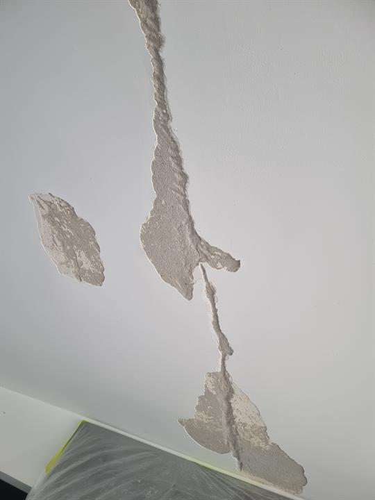
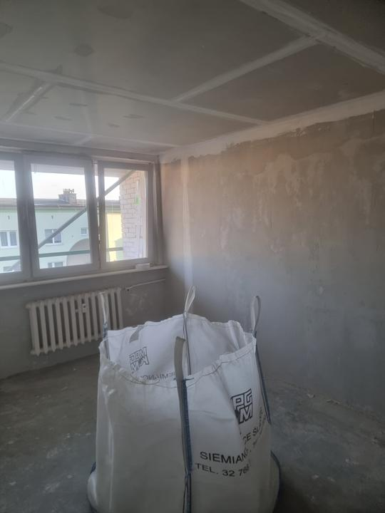
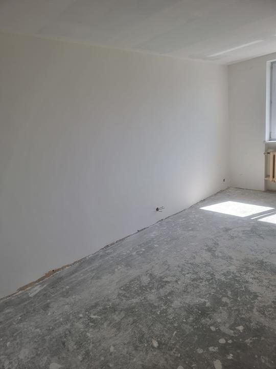
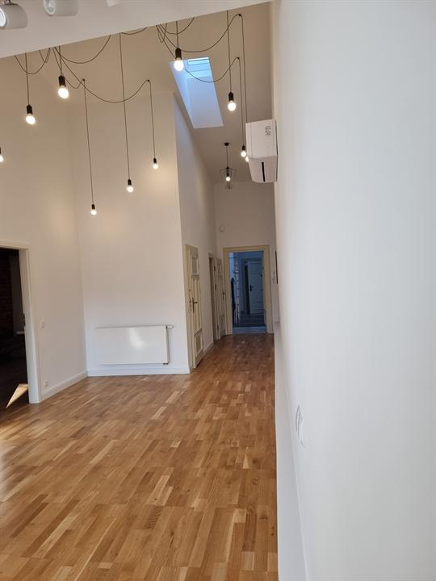

Bielsko-Biała i okolice
Gładzie i szpachlowanie ścian
Wyrównujemy ściany i sufity na tynkach gipsowych, cementowo-wapiennych, płytach G-K i starych powłokach — w standardzie Q1–Q4, najczęściej od razu z malowaniem na gotowo.
- Standard Q1–Q4
- Natryskowo i ręcznie
- Gładź + malowanie na gotowo
Cenaod 90 zł/m²gładź z malowaniem na gotowo na tynku gipsowym, netto z materiałem · sama gładź od 65 zł/m²
Kiedy nas wołasz
- Nowe tynki, które mają być idealnie gładkie pod jasne, matowe farby.
- Stare ściany z rysami, ubytkami i nierównościami — po skuciu płytek, zdjęciu tapety czy wymianie instalacji.
- Sufity i zabudowy G-K do wykończenia w wysokim standardzie.
- Wnętrza z dużymi oknami lub oświetleniem LED, w których widać każdą falę na ścianie.
Zakres i sposób wykonania
Standard Q1–Q4 dopasowany do wnętrza
Q1–Q2 to wypełnienie spoin i podstawowe wyrównanie — wystarcza pod tapetę lub fakturę. Q3 to gładź na całej powierzchni pod typowe malowanie. Q4 to najwyższy standard z kontrolą pod światłem bocznym — pod głęboki mat i ostre oświetlenie. Standard ustalamy przy wycenie, żebyś nie płacił za Q4 tam, gdzie wystarczy Q3.
Przygotowanie podłoża
Usuwamy luźne fragmenty, poszerzamy i wypełniamy rysy, zbroimy pęknięcia siatką lub flizeliną, prostujemy narożniki narożnikami aluminiowymi lub papierowymi. Podłoże gruntujemy preparatem dobranym do jego chłonności.
Natryskowo lub ręcznie — zależnie od metrażu
Na dużych powierzchniach gładź nakładamy natryskowo i ściągamy długimi pacami — warstwa jest równiejsza, a praca idzie szybciej. Mniejsze pomieszczenia i poprawki wykonujemy ręcznie.
Szlifowanie i kontrola pod światło
Każdą warstwę szlifujemy i sprawdzamy lampą ustawioną pod kątem, poprawiając miejsca, które tego wymagają. Pomieszczenia, w których nie pracujemy, oddzielamy folią.
Gładź z malowaniem na gotowo
Najczęściej robimy całość: gładź, szlif, grunt i dwie warstwy farby. Jedna ekipa odpowiada za efekt od podłoża do koloru — nikt nie przerzuca winy między gładziarzem a malarzem.
Akryl i detale
Styki ze stolarką, narożniki wewnętrzne i połączenia ze ścianą uszczelniamy akrylem. Wnęki okienne i ościeża wykańczamy razem ze ścianami.
Jak przebiega realizacja
Wycena
Na podstawie zdjęć lub oględzin określamy podłoże, potrzebny standard i zakres napraw.
Zabezpieczenie
Okrywamy podłogi, okna i stolarkę, oddzielamy pomieszczenia folią.
Naprawy i grunt
Wypełniamy ubytki, zbroimy rysy, osadzamy narożniki i gruntujemy podłoże.
Gładź i szlifowanie
Nakładamy gładź warstwami, szlifujemy i kontrolujemy pod światło.
Malowanie i odbiór
Gruntujemy i malujemy na gotowo (jeśli jest w zakresie), sprzątamy i odbieramy prace razem z Tobą.
Od czego zależy cena
- Rodzaj podłoża — tynk gipsowy wymaga najmniej materiału, tynk cementowo-wapienny i stare ściany więcej.
- Standard wykończenia — Q4 to więcej warstw i dokładniejsza kontrola niż Q3.
- Sama gładź czy gładź z malowaniem na gotowo.
- Metraż, wysokość pomieszczeń i to, czy wnętrze jest puste czy umeblowane.
Wszystkie ceny podajemy netto i z materiałem. Dla mieszkań i domów najczęściej obowiązuje 8% VAT, w pozostałych przypadkach 23%.
Policz orientacyjną cenę w minutęNajczęstsze pytania
Ile kosztuje gładź za m²?
Na tynku gipsowym sama gładź od 65 zł/m² netto, a z malowaniem na gotowo od 90 zł/m². Na tynku cementowo-wapiennym i starych ścianach od 75 zł/m² (z malowaniem od 100 zł/m²). Ceny są z materiałem.
Czym różni się standard Q3 od Q4?
Q3 to gładź na całej powierzchni, wystarczająca pod większość farb i zwykłe oświetlenie. Q4 to dodatkowa warstwa i dokładne szlifowanie z kontrolą pod światłem bocznym — wybiera się go pod głęboko matowe farby, duże przeszklenia i oświetlenie liniowe LED.
Czy na tynk gipsowy trzeba robić gładź?
Nie zawsze. Dobrze zatarty tynk gipsowy można malować bezpośrednio, ale gładź daje wyraźnie lepszy efekt przy matowych farbach i świetle bocznym. Ocenimy to na miejscu i powiemy szczerze, czy gładź jest potrzebna.
Ile schnie gładź przed malowaniem?
To zależy od grubości warstw, temperatury i wentylacji. Malujemy dopiero wtedy, gdy gładź jest sucha i zagruntowana — pośpiech na tym etapie kończy się przebarwieniami.
Czy robicie gładzie w zamieszkanym mieszkaniu?
Tak. Opróżniamy lub okrywamy pomieszczenie, oddzielamy je folią od reszty mieszkania i pracujemy etapami, żeby dało się normalnie funkcjonować.
Poradniki na blogu
Nasze realizacje

Przed: popękany sufit w mieszkaniu w bloku 
W trakcie: szpachlowanie ścian i sufitu 
Po: gładkie, białe ściany i sufit 
Poddasze w kamienicy po gładziach i malowaniu
Gładzie w Bielsku-Białej i okolicach — umów bezpłatną wycenę
Pracujemy w Bielsku-Białej i okolicach — m.in. w Jaworzu, Czechowicach-Dziedzicach, Kozach, Wilkowicach i Szczyrku. Większe zlecenia realizujemy też dalej, np. w Cieszynie.